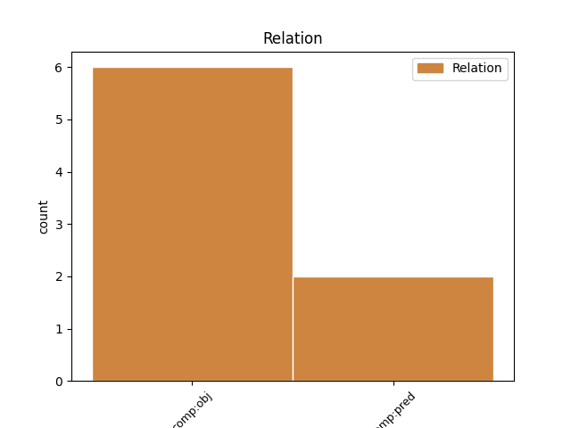
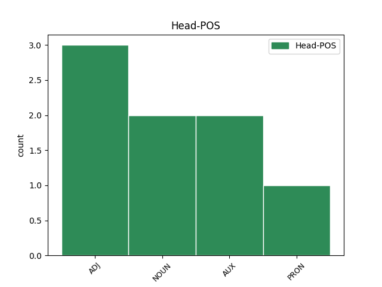
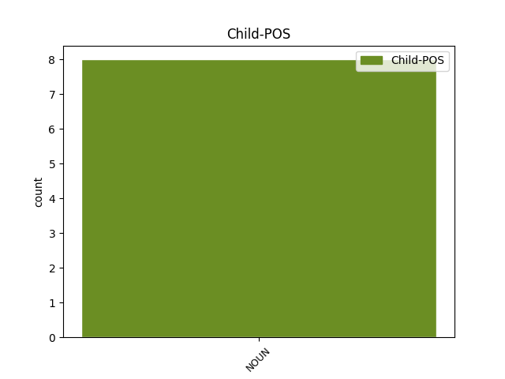

Distribution of features within this leaf



Agreement Rules sorted by frequency.
- When the dependent token is the direct object complements(comp:obj) of the head token, and the head token is ADJ and the dependent token is NOUN.
1 Lietuvoje _ _ _ _ 0 _ _ _
2 populiari _ _ _ _ 0 _ _ _
3 nacistams nacistas NOUN NN Case=Dat|Gender=Masc|Number=Plur 4 comp:obj _ En=nazist
4 artimo artimas ADJ JJL Case=Gen|Definite=Ind|Degree=Pos|Gender=Masc|Number=Sing 0 _ _ _
5 mąstytojo _ _ _ _ 0 _ _ _
6 Carlo _ _ _ _ 0 _ _ _
7 Schmidto _ _ _ _ 0 _ _ _
8 doktorina _ _ _ _ 0 _ _ _
9 , _ _ _ _ 0 _ _ _
10 nors _ _ _ _ 0 _ _ _
11 jos _ _ _ _ 0 _ _ _
12 rėmėjai _ _ _ _ 0 _ _ _
13 kartais _ _ _ _ 0 _ _ _
14 gal _ _ _ _ 0 _ _ _
15 net _ _ _ _ 0 _ _ _
16 negirdėjo _ _ _ _ 0 _ _ _
17 to _ _ _ _ 0 _ _ _
18 vardo _ _ _ _ 0 _ _ _
19 . _ _ _ _ 0 _ _ _
1 Bet _ _ _ _ 0 _ _ _
2 turbūt _ _ _ _ 0 _ _ _
3 nebus _ _ _ _ 0 _ _ _
4 nekuklu _ _ _ _ 0 _ _ _
5 , _ _ _ _ 0 _ _ _
6 jei _ _ _ _ 0 _ _ _
7 pasakysime _ _ _ _ 0 _ _ _
8 , _ _ _ _ 0 _ _ _
9 kad _ _ _ _ 0 _ _ _
10 turime _ _ _ _ 0 _ _ _
11 būti _ _ _ _ 0 _ _ _
12 lietuviškais _ _ _ _ 0 _ _ _
13 Faidonais _ _ _ _ 0 _ _ _
14 , _ _ _ _ 0 _ _ _
15 Faidrais _ _ _ _ 0 _ _ _
16 arba _ _ _ _ 0 _ _ _
17 Kritonais _ _ _ _ 0 _ _ _
18 – _ _ _ _ 0 _ _ _
19 mokiniais _ _ _ _ 0 _ _ _
20 , _ _ _ _ 0 _ _ _
21 atsakingais _ _ _ _ 0 _ _ _
22 už _ _ _ _ 0 _ _ _
23 savo _ _ _ _ 0 _ _ _
24 mokytojo _ _ _ _ 0 _ _ _
25 minčių mintis NOUN NN Case=Gen|Gender=Fem|Number=Plur 26 comp:obj _ En=idea
26 sklaidą sklaida NOUN NN Case=Acc|Gender=Fem|Number=Sing 0 _ _ _
27 ir _ _ _ _ 0 _ _ _
28 už _ _ _ _ 0 _ _ _
29 jo _ _ _ _ 0 _ _ _
30 atminimą _ _ _ _ 0 _ _ _
31 . _ _ _ _ 0 _ _ _
1 Iš _ _ _ _ 0 _ _ _
2 esmės _ _ _ _ 0 _ _ _
3 jie jie PRON PRP Case=Nom|Gender=Masc|Number=Plur|Person=3 0 _ _ _
4 puikiai _ _ _ _ 0 _ _ _
5 užkonservavo _ _ _ _ 0 _ _ _
6 kaip _ _ _ _ 0 _ _ _
7 tik _ _ _ _ 0 _ _ _
8 tokią _ _ _ _ 0 _ _ _
9 lietuvių _ _ _ _ 0 _ _ _
10 tautą _ _ _ _ 0 _ _ _
11 , _ _ _ _ 0 _ _ _
12 kokia _ _ _ _ 0 _ _ _
13 patinka _ _ _ _ 0 _ _ _
14 mūsų _ _ _ _ 0 _ _ _
15 pseudointelektualams pseudointelektualas NOUN NN Case=Dat|Gender=Masc|Number=Plur 3 comp:obj _ En=pseudointellectual|SpaceAfter=No
16 . _ _ _ _ 0 _ _ _
Disagree Examples:
1 Globalizmas _ _ _ _ 0 _ _ _
2 esąs būti AUX VBNL Case=Nom|Definite=Ind|Gender=Masc|Number=Sing|Polarity=Pos|Reflex=No|Tense=Pres|VerbForm=Part|Voice=Act 0 _ _ _
3 tik _ _ _ _ 0 _ _ _
4 plėšraus _ _ _ _ 0 _ _ _
5 kapitalizmo _ _ _ _ 0 _ _ _
6 priedanga priedanga NOUN NN Case=Nom|Gender=Fem|Number=Sing 2 comp:pred _ En=shelter
7 ir _ _ _ _ 0 _ _ _
8 pseudonimas _ _ _ _ 0 _ _ _
9 , _ _ _ _ 0 _ _ _
10 o _ _ _ _ 0 _ _ _
11 iš _ _ _ _ 0 _ _ _
12 to _ _ _ _ 0 _ _ _
13 plėšraus _ _ _ _ 0 _ _ _
14 kapitalizmo _ _ _ _ 0 _ _ _
15 turi _ _ _ _ 0 _ _ _
16 naudos _ _ _ _ 0 _ _ _
17 tik _ _ _ _ 0 _ _ _
18 tamsios _ _ _ _ 0 _ _ _
19 internacionalinės _ _ _ _ 0 _ _ _
20 jėgos _ _ _ _ 0 _ _ _
21 – _ _ _ _ 0 _ _ _
22 paprastai _ _ _ _ 0 _ _ _
23 dėl _ _ _ _ 0 _ _ _
24 viso _ _ _ _ 0 _ _ _
25 pikto _ _ _ _ 0 _ _ _
26 nesakoma _ _ _ _ 0 _ _ _
27 , _ _ _ _ 0 _ _ _
28 bet _ _ _ _ 0 _ _ _
29 gana _ _ _ _ 0 _ _ _
30 aiškiai _ _ _ _ 0 _ _ _
31 duodama _ _ _ _ 0 _ _ _
32 suprasti _ _ _ _ 0 _ _ _
33 , _ _ _ _ 0 _ _ _
34 kad _ _ _ _ 0 _ _ _
35 tai _ _ _ _ 0 _ _ _
36 žydai _ _ _ _ 0 _ _ _
37 ( _ _ _ _ 0 _ _ _
38 pavyzdžiui _ _ _ _ 0 _ _ _
39 Sorosas _ _ _ _ 0 _ _ _
40 ) _ _ _ _ 0 _ _ _
41 . _ _ _ _ 0 _ _ _
1 Esama būti AUX VBNH Definite=Ind|Gender=Neut|Polarity=Pos|Reflex=No|Tense=Pres|VerbForm=Part|Voice=Pass 0 _ _ _
2 taip _ _ _ _ 0 _ _ _
3 pat _ _ _ _ 0 _ _ _
4 psichologinio _ _ _ _ 0 _ _ _
5 komplekso kompleksas NOUN NN Case=Gen|Gender=Masc|Number=Sing 1 comp:pred _ En=complex|SpaceAfter=No
6 , _ _ _ _ 0 _ _ _
7 kurį _ _ _ _ 0 _ _ _
8 pavadinčiau _ _ _ _ 0 _ _ _
9 „ _ _ _ _ 0 _ _ _
10 nepriklausomybės _ _ _ _ 0 _ _ _
11 fetišizmu _ _ _ _ 0 _ _ _
12 “ _ _ _ _ 0 _ _ _
13 . _ _ _ _ 0 _ _ _